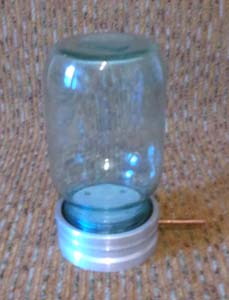
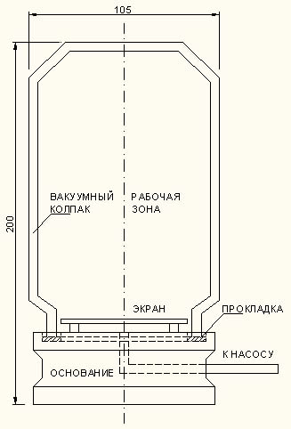
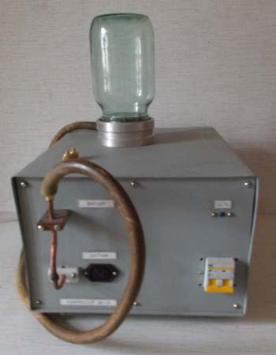

Столик с вакуумным колпаком

Назначение
Столик с вакуумным колпаком в комплекте с форвакуумным насосом [1] позволяет создать простую вакуумную установку (вакуумный пост) для проведения различных технологических операций, связанных с сушкой или дегазацией, а также физических опытов.
Характеристики:
Конструкция и принцип работы
Эскиз столика в разрезе показан на рис. 1. На алюминиевом основании сделана круговая прорезь под резиновую уплотняющую прокладку, на которую устанавливается вакуумный колпак. По центру основания и сбоку сверлятся глухие пересекающиеся отверстия для откачиваемого воздуха. В боковое отверстие с резьбой вкручивается трубка, на которую надевается вакуумный шланг от форвакуумного насоса. Экран на стойках предохраняет центральное отверстие от перекрывания вакуумируемыми объектами. В качестве вакуумного колпака используется стандартная стеклянная банка для консервирования объемом 1 л.

Рис. 1. Эскиз столика с вакуумным колпаком.
Вакуумный пост
Внешний вид вакуумного поста показан на рис. 2.

Рис. 2. Вакуумный пост: форвакуумный насос и столик с вакуумным колпаком.
Состояние разработки
Столик с вакуумным колпаком используется при дегазации эпоксидных компаундов, предназначенных для пропитки обмоток электрических машин или склеивания ответственных узлов, сушке материалов, а также для проведения физических опытов в невысоком вакууме.
Ссылки:
04.11.2015
05.11.2015
Альтернативные источники
энергии
Компьютеры и
Интернет
Магнитные поля
Механотронные системы
Перспективные
разработки
Электроника и
технология